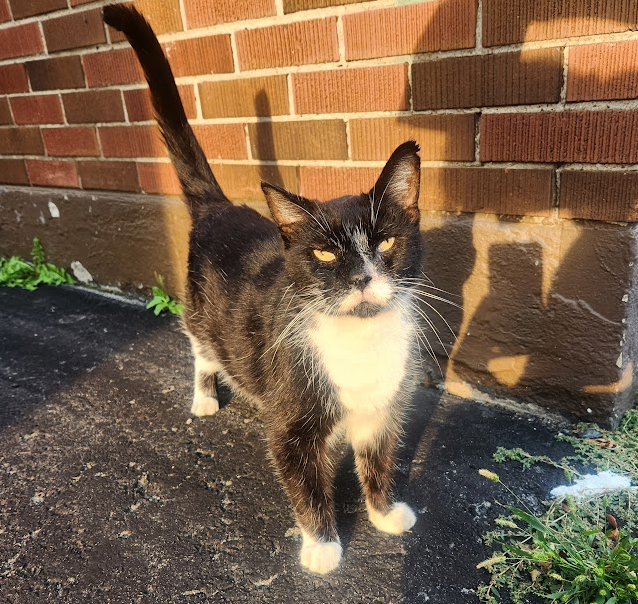
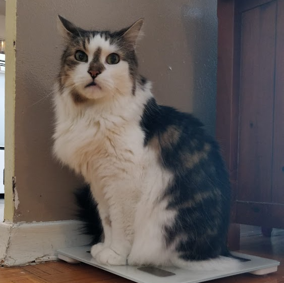
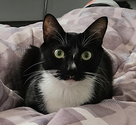
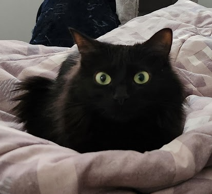
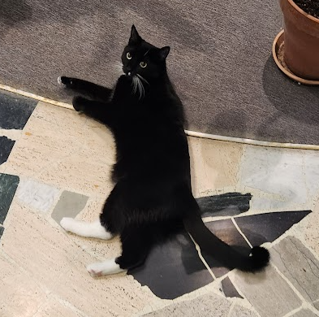

Sweet Christmas Harold who lives in the building next to Eugene's. He is an old guy but oh so handsome!

My sweet handsome boy Toso; a most wonderful creature and my sweetest boy

Eugene's cat Mr Winston; a very handsome gentleman

Eugene's cat pretty Luna; she is truly spectacular

Superintendent's cat Boots; he is a cute tuxedo that hangs out in the lobby sometimes